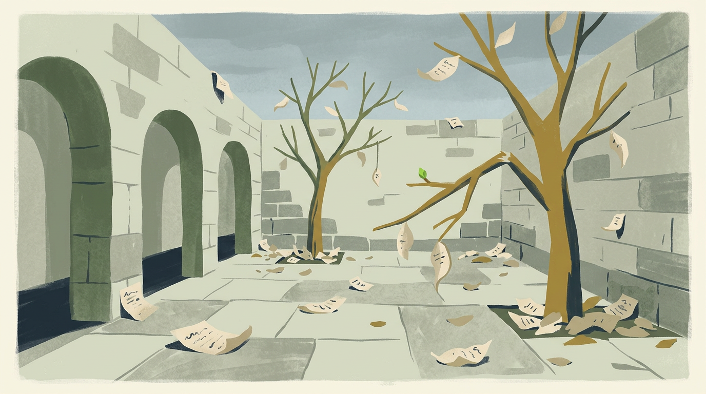

Then came the dry season. Fewer letters arrived, and Lina grew busy with school. For weeks she passed the trees without really reading them, and slowly the leaves curled at the edges and faded.
One night a windstorm tore through the courtyard. In the morning, half the branches lay broken on the tiles, their sentences scattered and smudged.

Lina gathered the pieces one by one. She could not glue them back, but she could read them. And as she read, she noticed small new buds forming where the old branches had snapped.